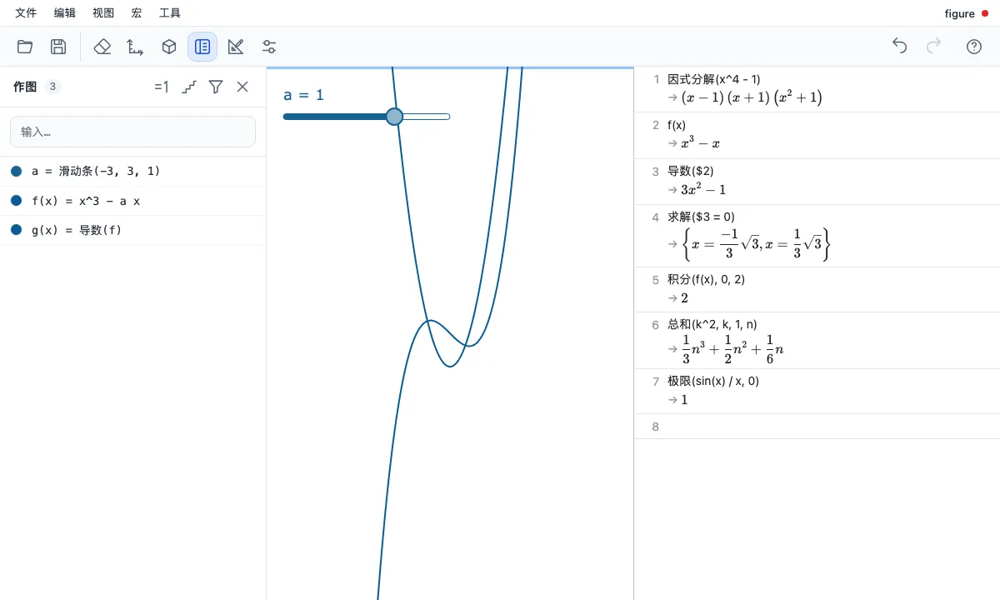

符号计算
DocGeo 借助 Xcas 和 GeoGebra 的符号计算引擎 Giac 计算精确值：导数、原函数、因式分解、方程、极限、求和，既可用于图形的公式，也可用于 CAS 视图。它还能求出轨迹的方程，并证明几何性质。

Giac 在计算第一次需要它时才加载，不需要它的图形永远不会加载。最近的结果保存在图形中：图形打开和显示时无需等待 Giac，离线也可以。如果无法加载 Giac，左下角会显示“⚠ Giac”：已知的结果继续显示，其余的结果未定义。
符号计算命令
它们可以像函数一样用于任何公式。公式仅由其中一个命令构成的表达式显示 Giac 的结果，而不是其公式。
| 命令 | 结果 |
|---|---|
导数(f), 导数(e, v),
导数(e, v, n)
|
导数，关于 v 的 n 阶导数 |
积分(e), 积分(e, v)
|
原函数 |
积分(x^2, 0, a),
积分(e, v, a, b)
|
从 a 到 b 的积分，精确值 |
因式分解(e) |
在有理数范围内因式分解：x^2 - 2
保持不变
|
实数域因式分解(e) |
在根式范围内因式分解：(x − √2)(x + √2) |
展开(e), 化简(e) |
展开式，化简式 |
求解(x^2 = 2),
求解(e, v)
|
方程或等于零的表达式的实数解，按顺序排列 |
复数求解(e) |
复数解 |
总和(e, k, a, b) |
k 为从 a 到 b 的整数时 e 的和 |
极限(e, a),
极限(e, v, a)
|
在 a 处的极限，a 可以是 ∞ |
泰勒公式(e, a, n),
泰勒公式(e, v, a, n)
|
在 a 处 n 阶泰勒多项式 |
变量 v 为 x、y、z 或
t，默认为表达式读到的第一个。图形中的函数用其名称书写：g(x) = 导数(f)。
-
滑动条对 Giac 而言始终是符号：即使 a 等于 4，
因式分解(x^2 - a)也显示 x² − a。因此移动滑动条不会向 Giac 请求任何计算：运动过程中只是重新求值。 -
例外：泰勒多项式的阶 n，以及没有简单形式的和的上下限（
总和(1/k, k, 1, n)），按其数值读取：滑动条的每个整数值对应一个结果。 -
积分(f, a, b)（f 为函数名称）仍是绘制面积的命令；积分(x^2, 0, 1)或积分(e, v, a, b)计算精确值。 - 在结果到达之前，对象保留其最后的值。DocGeo 无法读取的结果使对象未定义。等待 Giac 时，导数由 DocGeo 自行计算。
CAS 视图
与 GeoGebra 的相同：带编号的计算行，位于图形旁边或其自己的标签页中。
| 操作 | 方法 |
|---|---|
| 添加视图 | 文件 › 视图 › 新建 CAS 视图 （每个图形一个），或 文件 › 新建 CAS 标签页 （“CAS1”、“CAS2”…） |
| 计算一行 | 在最后一个空行中输入，然后按 Enter：显示结果，并出现新的一行 |
| 修改一行 | 点击该行，然后按 Enter；Esc 恢复之前的文本，↑ 和 ↓ 在行之间移动 |
| 删除一行 | 清空该行，然后按 Enter：后面的编号随之前移 |
| 删除视图 | 文件 › 视图 › 删除 CAS 视图 |
每次修改都可以用撤销撤销。无法理解的行会被拒绝，显示为红色。
书写一行
-
一行就是一个公式，可以有命令也可以没有：
sqrt(12) - sqrt(3)得到 √3，因式分解(x^4 - 1)得到其因式分解。 -
$2是第 2 行的结果。删除一行时，$n会重新编号，对已删除行的引用会被替换为其公式。 -
b := 3和h(x) := x^2 + 1为后续各行定义一个数或一个函数。 -
图形的对象按其当前值读取：a = 2 时，
a^2得到 4。移动这些对象时，读取它们的行会重新计算。不是对象的字母是自由变量：b^2仍为 b²。 -
pi和ln的写法与 GeoGebra 相同，∞也可写作inf。角度始终以弧度计，即使在以度为单位的图形中也是如此。 -
近似数(e)、近似数(e, n)给出近似值（n 位数字）；保留输入(e)原样显示 e，不作计算。引号中的一行，"精确计算"，是普通文本。 -
?代替 Giac 没有给出或 DocGeo 无法读取的结果。
用鼠标指定
在输入已开始的一行时，点击图形中的对象会写入其名称；点击另一行会写入其
$n。在空行上，图形照常响应。
定义图形的对象
只读取图形对象的定义也会创建该对象，并在构造中生成其行：m(x) := x^2 + a
绘制函数 m。读取自由变量、$n
或仅在视图中定义的名称的定义（n := b^2）只属于该视图。
在播放器中，各行以浏览器的语言显示。
代数曲线
在构造中输入的任意次数或非多项式的方程是一条曲线：f = x^3 + y^3 = 3x y（笛卡儿叶形线），c = sin(x) = y。它在穿过窗口的地方绘制，并在移动窗口时跟随窗口；可以在其上放置点，并与其他对象求交。
| 命令 | 结果 |
|---|---|
轨迹方程(M, P) |
当对象上的点 P 在其对象上移动时，点 M 描出的整条曲线 |
包络(d, P) |
当 P 在其对象上移动时，与直线 d 的各个位置相切的整条曲线 |
与 GeoGebra
一样，这是整个方程及其所有分支，而不仅是经过的部分：沿线段移动的点的
轨迹方程 给出整条直线。等待 Giac
时，或对于它无法转换的构造（宏、角平分线、内切圆、以滑动条为驱动、空间），显示的是
轨迹 经过的轨迹。
证明
六个谓词（每个参数都是对象的名称）判断某个性质在当前图形中是否成立：true
或 false。
| 谓词 | 为真，当 |
|---|---|
是否共线(A, B, C) |
三点共线 |
是否平行(d, e),
是否垂直(d, e)
|
直线、线段或射线平行、垂直 |
是否共圆(A, B, C, D) |
四点在同一个圆（或同一条直线）上 |
是否共点(d, e, f) |
三条直线经过同一点（或互相平行） |
是否相等(a, b) |
两个点、两条直线或两个圆重合；两条线段长度相等；两个数相等 |
证明(p)（p
为这些谓词之一）判断它是否一般地成立：对于自由点和对象上的点的所有位置，退化情形除外。设
G = 重心(A, B, C)，把 C 放到 (AB) 上时
是否共线(A, B, G) 变为真，但
证明(是否共线(A, B, G)) 仍为假。Giac 像 GeoGebra
一样把构造转换为方程：结果最多几秒钟就会得到，并保存在图形中。
-
计算同时涵盖所有交点：要讨论经过点 A
的直线与圆的第二个交点，请用
另一交点(c, d, A)构造它。 -
对于无法转换的构造（轨迹方程
无法转换的那些，或不是简单分数的角度、比或半径，例如 60°
的旋转），以及在 CAS 视图中，
证明保持未定义。 -
参数是名称：请先构造并命名直线，
证明(是否平行(d, e))。
GeoGebra 图形
导入时会保留公式中的符号计算命令、GeoGebra 的 CAS
视图中的行、其计算器套件（Suite）中的行、LocusEquation、Envelope、Prove
以及各谓词。使用 DocGeo 没有的命令的单元格会被报告。